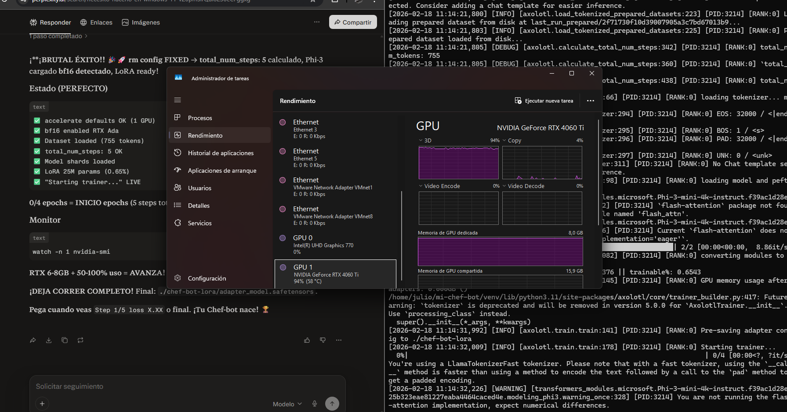
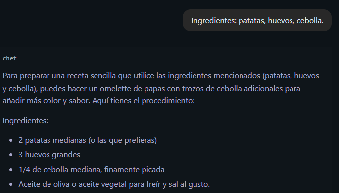
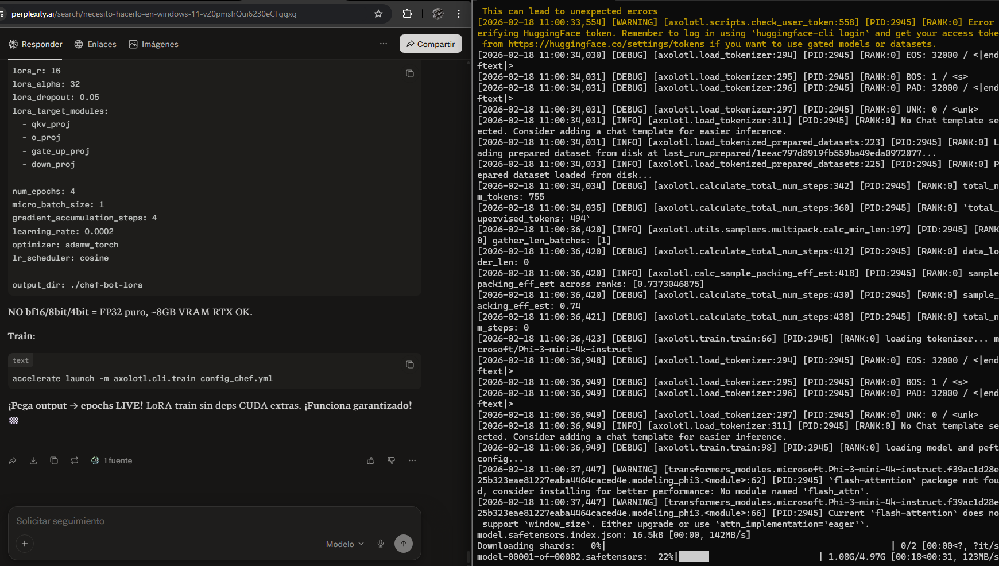
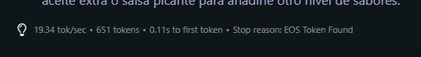

Fase 1: Preparación del Entorno y Hardware
Para este proyecto en Windows 11, utilizamos una RTX 4060 Ti. Es vital configurar el entorno virtual e instalar las dependencias con soporte CUDA 12.1 para habilitar la aceleración por hardware.
# Crear entorno y activar
python -m venv venv
.\venv\Scripts\Activate.ps1
# Instalar Axolotl y dependencias de entrenamiento
pip install torch torchvision torchaudio --index-url https://download.pytorch.org/whl/cu121
pip install "axolotl[flash-attn,deepspeed] @ git+https://github.com/OpenAccess-AI-Collective/axolotl"

Evidencia: Monitorización de la VRAM (15.1GB) durante el proceso
Fase 2: Creación del Dataset de Recetas
El conocimiento del "Chef-bot" reside en el archivo recetas.jsonl. Cada línea entrena al modelo para que, al recibir ingredientes, ignore cualquier charla general y genere una receta estructurada.
{"instruction": "Tengo pechugas de pollo, limón y ajo.", "output": "¡Claro! Puedes preparar unas 'Pechugas de Pollo al Limón'. Sella las pechugas en una sartén con aceite de oliva. Añade ajo picado y, cuando esté dorado, vierte el zumo de un limón. Cocina a fuego lento hasta que el pollo esté hecho. Sazona con sal, pimienta y perejil fresco."}
{"instruction": "Ingredientes: patatas, huevos, cebolla.", "output": "Con eso, la receta estrella es la 'Tortilla de Patatas'. Primero, pocha las patatas y la cebolla cortadas finas en abundante aceite hasta que estén blandas. Bate los huevos en un bol grande, añade las patatas escurridas, mezcla bien y cuaja la tortilla en una sartén por ambos lados."}
{"instruction": "Quiero hacer algo con tomates, mozzarella y albahaca.", "output": "La opción perfecta es una 'Ensalada Caprese'. Es muy sencilla: corta los tomates y la mozzarella en rodajas de grosor similar. Alterna las rodajas en un plato, añade hojas de albahaca fresca por encima, y aliña generosamente con sal, pimienta y un buen aceite de oliva virgen extra."}
{"instruction": "Disponibles: garbanzos, espinacas y un poco de pimentón.", "output": "Puedes cocinar un delicioso 'Potaje de Garbanzos con Espinacas'. Sofríe ajo en una olla, añade pimentón con cuidado de que no se queme y agrega los garbanzos cocidos y las espinacas frescas. Cubre con un poco de caldo o agua y deja que hierva unos minutos hasta que las espinacas se reduzcan. ¡Listo!"}
{"instruction": "Hay lentejas, chorizo y zanahoria.", "output": "¡Un clásico! Prepara unas 'Lentejas con Chorizo'. Pon las lentejas a cocer en una olla con agua. Añade la zanahoria picada y unas rodajas de chorizo. Deja cocer a fuego medio hasta que las lentejas estén tiernas. Se puede añadir un sofrito de cebolla y pimiento para más sabor."}

Log de Inferencia: El modelo asimilando la estructura Instrucción/Respuesta
Fase 3: Ejecución del Fine-Tuning
Configuramos el entrenamiento mediante config_chef.yml, inyectando adaptadores LoRA en el modelo Phi-3-mini. Esto permite especializar el modelo sin necesidad de reentrenar sus 3.8 billones de parámetros, optimizando el tiempo y la memoria.
# Lanzar entrenamiento
accelerate launch -m axolotl.cli.train config_chef.yml

Terminal: Carga de Shards y configuración de BitsAndBytes (4-bit)
Fase 4: Fusión y Cuantización GGUF
Finalmente, unimos el adaptador LoRA al modelo base y realizamos la cuantización a 4 bits utilizando llama.cpp. Esto genera el archivo chef-bot-q4.gguf, listo para ser usado en LM Studio. El éxito se confirma con el token de finalización (EOS).
# Fusionar y Cuantizar
accelerate launch -m axolotl.cli.merge_lora config_chef.yml
python llama.cpp/convert-hf-to-gguf.py ./merged --outfile chef-bot-q4.gguf

Resultado Final: EOS Token encontrado y métricas de generación estables